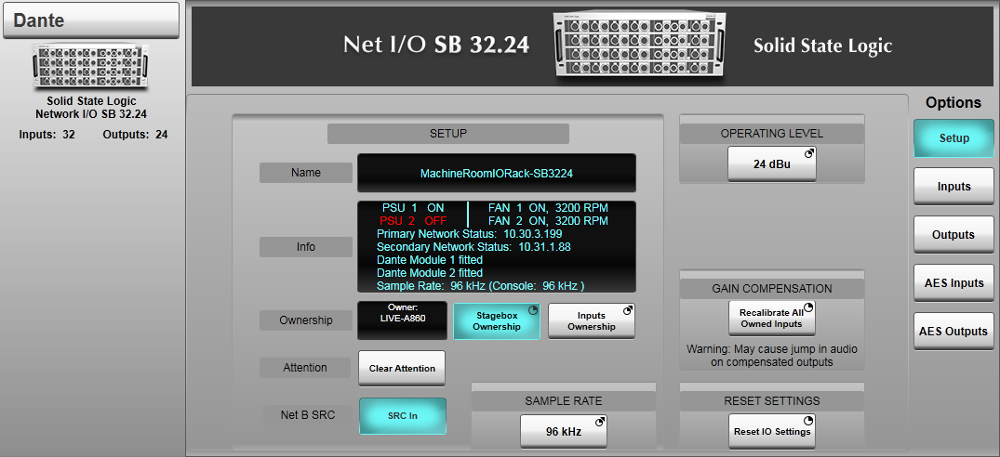
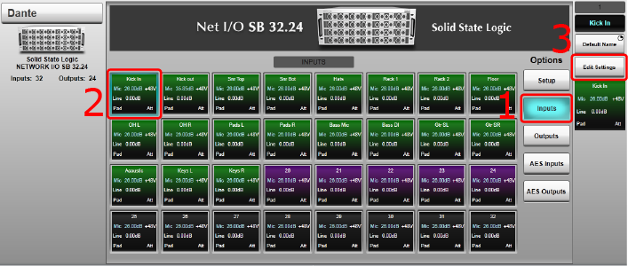
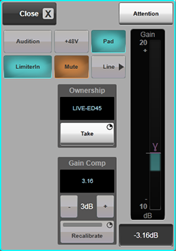
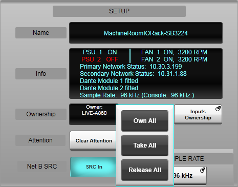
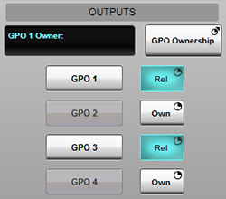
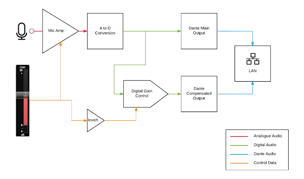
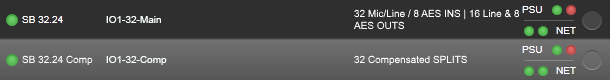
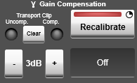

The following pages contain instructions on setting up SSL Live consoles for use with a Dante network, routing to and from Dante devices and controlling and gain sharing with SSL Net I/O Stageboxes:
- Setting Up Dante
- Virtual Tie Lines
- Dual Domain Routes and Configuring Dante Devices
- Network I/O Stageboxes and Devices (this page)
- BLII & X-Light Bridges
Network I/O Stageboxes and Devices
SSL Live consoles can remotely control the following SSL Network I/O devices:
- SB 16.12 - 16 analogue mic/line inputs, 8 analogue outputs and 2 AES pairs (four channels)
- SB 32.24 - 32 analogue mic/line inputs, 16 analogue outputs and 4 AES pairs (eight channels)
- SB 8.8 - 8 analogue mic/line inputs and outputs
- SB i16 - 16 analogue mic/line inputs
- A16.D16 - 4 analogue mic/line inputs, 12 analogue line inputs, 16 analogue line outputs, 8 AES pairs, 4 GPIOs
- A32 - 32 analogue line inputs and outputs
- D64 - 32 AES pairs
- GPIO32 - 32 GPIOs
- MADI-Bridge - 64 channel (at 48k) bridge between MADI and Dante
These devices can also be controlled by SSL System T consoles and the Network I/O Controller application for PC.
All Network I/O units support the AES67 and SMPTE 2110-30 AoIP network transport standards.
The Network I/O Controller application and manuals for all Network I/O devices can be downloaded from www.solidstatelogic.com/live/remote-ecosystem/documents.
Control and monitoring of Dante-based Shure ULX-D and Axient Digital wireless microphones is possible from the console. Please refer to the Shure Wireless Control section for further details.
Remote control of the input parameters of Shure ANI devices is also possible; please refer to the Shure ANI section for further details.
Note: After changing the IP address of Network I/O devices, please fully reboot the device by disconnecting the power cables from the back of the unit and reconnecting them. Using the Reboot button in Dante Controller does not fully reboot the device.Stagebox Reset
It is a good idea to reset Net I/O Stagebox settings before using on a new show. They can be reset using the Reset IO Settings button. This can be found in the Dante I/O Configuration page (MENU > Setup > I/O > Dante Configuration) by tapping on the stagebox and navigating to the Setup tab.

Note: You must be stagebox owner to reset the stagebox. Press & hold the Stagebox Ownership button to engage and take ownership.Caution: Resetting the stagebox will cause jumps in level on the main and compensated split channels. SSL recommends that all affected channels are muted at the receiving device before performing a stagebox reset.
Reset IO Settings resets the following settings:
- All Ownership states will be set to unowned (see Ownership section below)
- All inputs will be set to +35 dB gain in Mic mode
- +48V will be off for all inputs
- Pad will be off for all inputs
- Gain compensation points will be reset to +25 dB (10 dB below the +35 dB default mic gain setting) (see Gain Sharing section below)
- For the SB 32.24, resets the AES Input Enabled buttons so all inputs are set to analogue (if applicable)
- AES SRC will be off for all inputs (if applicable)
- AutoPad will be off (if applicable)
- Limiter will be off for all inputs (if applicable)
- GPOs will be off (if applicable)
- Input and Output Mute controls will be off
IP addresses, Network A&B Link status (if applicable), sample rate and operating level will be retained.
Note: Please allow up to 30 seconds for all parameters to be reset.Ownership
Net I/O Stageboxes can be controlled by SSL Live or System T consoles and the Network I/O Controller application for PC.
The concept of ownership has been introduced to assign one owner to each stagebox input and GPO, so that there are no fights for control. There is also one owner of the stagebox's general setup with control over operating level and other stagebox-wide settings (including AES/Analogue input switching on the SB 32.24).
So before you can remote control a stagebox, you must become the owner of that parameter. Ownership states are stored in the stagebox.
Please Note:It is only possible to control the Main stagebox device. The Comp device can never be controlled or owned. For more information on the Main and Comp devices please see Gain Sharing with Net I/O Stageboxes.
First, ensure the stagebox you want to control is in the Configured Devices list (see Configuring Dante Devices).
The following ownership options are available:
- Stagebox ownership: Change operating level, choosing between AES and analogue inputs, turning the AES input SRCs In and turning AutoPad on or off
- Input ownership: control input parameters only
- GPO ownership: control all GPO parameters & settings
Stagebox Ownership provides control over the following parameters:
- Operating level
- Enabling AES Inputs (SB 32.24 only)
- Turning on AES input SRCs (SB 16.12 & SB 32.24 only)
- Turning AutoPad on or off (SB 8.8 or i16 only)
- Enabling Network B SRC (SB 16.12 & SB 32.24 only)
- Reset stagebox settings
The Stagebox Owner cannot control inputs. The stagebox does not require a Stagebox Owner at all times, so if you do not need to adjust the above settings the Stagebox Ownership can remain unowned.
To become the Stagebox owner, tap on the stagebox in the Dante Configuration page and the stagebox's Detail View will appear at the bottom. Press and hold Stagebox Ownership.
The Stagebox owner is listed in cyan to the left of this button.
To release Stagebox ownership press and hold Stagebox Ownership again to disengage.
The owner of an input can control all input parameters including gain, Pad, Mic/Line and +48V.
When a stagebox input is routed to the input of a Channel on the console, and that input didn't have an owner, then the console will automatically become the owner of that input.
However, if that input was already owned by another device, the console will not automatically take ownership from that device. Ownership must be taken manually.
The input settings of a Net I/O stagebox can be viewed in the Channel Detail View in the Input/Routing page (if that input has been routed to a Channel) or in the Detail View for the stagebox in the Dante Configuration page.
To view the stagebox input settings tap on the stagebox in the Dante Configuration page and then tap Inputs to the right (1 below). Any inputs owned by the console will be displayed with a green background. Any inputs owned by another device will be purple. Unowned inputs are shown in black.


Tap on any input (2) and then tap Edit Settings (3) to view that input's settings in a pop out.
The following instructions apply whether viewing the input settings in the Channel View or in Dante Configuration.
To own an input, navigate to that input's settings and you will see an Ownership section with a button and a display box.
The button in the Ownership section will change its function depending on the ownership status of the input.
If the input does not currently have an owner, the button will say Own. There will be nothing displayed in the box. Press and hold Own and your console will become the owner of that input.
If the input already has an owner, the button will say Take. The current owner's device name will be displayed in the box. Press and hold Take and your console will take ownership of that input from the previous owner.
If your console is already the owner, the button will say Release. Your console's name will be displayed in the box. Press and hold Release and your console will release ownership, so that there is no owner of that input.
Notes:Ownership does not need to be released before it is taken.
Once your console has ownership, gain and input settings can be adjusted.
If your console is not the owner of an input, you will see that the controls are greyed out, and you cannot make any changes.

Ownership of all inputs of a Network I/O stagebox can be taken and released in one action. To do this go to MENU > Setup > I/O > Dante Configuration. Tap on the stagebox to view its settings in the Detail View.
In the Setup section of the stagebox, press and hold Inputs Ownership. There are three options available:
| Own All | Become the owner of all inputs that do not have an owner |
|---|---|
| Take All | Become the owner of all inputs (including inputs owned by a different device) |
| Release All | Release ownership of all inputs that the console owns |
Multiple control devices can own different inputs of a single stagebox at the same time. But there can never be more than one owner for the same input.

Some Net I/O devices have GPIO ports that can be accessed from the console. GPO Ownership settings must be adjusted from the Dante Configuration page. Tap on the stagebox and it's Detail View will appear. Tap GPIO to the right of the stagebox's Detail View. To become the owner of a specific GPO, press and hold Own or Take as appropriate. Press and hold Rel to release ownership.
Press and hold GPO Ownership then select Own All to become the owner of all previously unowned GPOs.
Use the Take All option to take ownership of all GPOs, including those already owned by other devices.
Use the Release All option to release ownership of all GPOs that the console owns.
Multiple control devices can own different GPOs of the stagebox at the same time. But there can never be more than one owner for the same GPO.
Loading Showfiles
Stagebox settings are retained in Live console showfiles so they can be recalled with a showfile load. When a showfile is saved, the console also saves whether it is the "owner" of each input (and other settings).
When a showfile is loaded, the console will attempt to become the owner of all of the inputs (and other settings) that it was the owner of when the showfile was saved. The console will only be successful if that input (or other setting) has no owner, or is owned by the console at the time of the showfile load. If that input (or other setting) is owned by another device, the console will not be able to take ownership.
However, this is not true when using Load with Owner Override. This function allows taking ownership from other devices upon showfile load. It is explained in this section below.
Note: It is therefore recommended that users clear the ownership of all stagebox inputs they wish to use before loading a showfile. Once all the inputs the user wishes to use are unowned, or owned by the user's console, the showfile can be loaded and the showfile's gain settings will be applied accordingly.The following table shows how stagebox ownership status will behave in different showfile load scenarios.
| Parameter Ownership Status Prior to Showfile Load | Parameter Ownership Status After Showfile Load | Parameter Settings Pushed from Showfile to Stagebox? |
|---|---|---|
| Owned by the console | Owned by the console | Yes |
| No owner | Owned by the console | Yes |
| Owned by another device | Still owned by the other device | No |
Please Note:
If the console was not the owner of an input (or other setting) at the time of showfile save, when the showfile is reloaded, the console will not attempt to become the owner of this input (or other setting) and it will be unaffected by the showfile load.
For example:
An L500 is the owner of inputs 1, 2 and 3 on an SB 32.24 and the showfile is saved.
Ch 1 Owner Ch 2 Owner Ch 3 Owner L500 L500 L500 After the showfile is saved, an operator with an L200 takes ownership of input 1. The operator of the L500 releases ownership of input 2, and retains ownership of input 3.
Ch 1 Owner Ch 2 Owner Ch 3 Owner L200 None L500 The L500 operator reloads the showfile, and the following will occur:
Input 1: The L500 attempts to become the owner, but Input 1 is owned by the L200. So the L500 cannot take ownership. Any gain settings, +48V, Pad etc. input settings will not be pushed from the L500 showfile to the stagebox's Input 1. Input 1 retains its previous gain and input settings.
Input 2: The L500 attempts to become the owner. Input 2 is not owned by any device, so the L500 successfully becomes the owner. Any gain settings, +48V, Pad etc. input settings will be pushed from the L500 showfile to the stagebox's Input 2.
Input 3: The L500 attempts to become the owner. Input 3 is already owned by the L500. Any gain settings, +48V, Pad etc. input settings will be pushed from the L500 showfile to the stagebox's Input 3.
Ch 1 Owner Ch 2 Owner Ch 3 Owner L200 L500 L500
Please be aware of the current ownership states of each input on your stagebox before loading a showfile with input settings stored. If other devices have ownership of some inputs, your console will not be able to take ownership of these inputs automatically on showfile load.
Before loading a showfile, go to MENU > Setup > I/O > Dante Configuration and add the stagebox to the Configured Devices list. Tap on the stagebox and its Detail View will appear. To take ownership of all inputs, press and hold the Inputs Ownership button in the Setup tab and select Take All.
To take ownership of individual inputs, select the first one you wish to own in the Inputs tab and tap Edit Settings. If the input is owned by another device (not your console), press and hold Take to take ownership. Check with the current owner beforehand if necessary! If the input has no owner, or the console is already the owner, proceed to the next input. Repeat this for all inputs that you wish to have control of. Each input should either have no owner, or your console should be the owner.
Ensure that the stagebox name(s) match those stored in the showfile.
Please note:Dante routes are associated with device names. So changing Dante device names will remove all routes. Renaming devices should be done from Dante Controller, not on the console. A warning dialogue will appear in Dante Controller before device names are changed to inform the user of a break in audio routes.
Then load the showfile and all appropriate inputs will be owned and settings will be pushed from the showfile to the stagebox successfully.
When the console is powered down normally it will release ownership of all its owned stagebox parameters.
Loading Showfiles with Owner Override
From Live 6.1 onwards, it's possible to load a showfile and override existing network ownership states. Any conditions listed above will be ignored, and the following occurs:
-
Subscription/Route creation
- If an Rx point on any Dante device already has a subscription, and a new subscription is included in the showfile, the showfile will successfully make this subscription.
- If there are Rx subscriptions on the network that do not cross over with subscriptions made by the showfile, they are left as they were before the showfile was loaded.
-
Parameter control on stageboxes (or any other device with ownership capabilities)
- If an audio input, output, GPI, GPO, or entire stagebox is already owned but this showfile would take ownership if there was no owner, loading with this mode will take ownership.
- If there are inputs/devices on the network that are owned by another device, but ownership of these is not included in the showfile, the ownership states are left as they were before the showfile was loaded.
Control
For Net I/O stageboxes, all parameters and settings will be displayed in the Dante Configuration page Detail View when the device is tapped.
Tapping Inputs or Outputs will show the settings for each input/output.
Tapping on an input provides control over the input parameters: (providing that the Inputs are owned (see Ownership section above).
When an input from an SSL Network I/O Stagebox has been routed to the input of a channel, the input parameters will also display in the Input/Routing section of the Detail View. The parameters can then be controlled from the Quick Controls, the Control Tile and the TaCo app.
SB 32.24 Analogue vs AES InputsNet I/O SB 32.24 stageboxes running at 96 kHz have a maximum of 32 inputs available. The inputs can either be analogue (up to 32) or AES (up to 4 pairs; eight channels). This is user-definable on a pair by pair basis.
To choose between analogue and AES inputs go to the Dante Configuration page and tap on an SB 32.24 Main device to bring up the device's detail view.
Press and hold Stagebox Ownership to become the owner of the Stagebox.
Tap on AES I/O and tap on the AES pair.
Press & hold the AES Input Enabled button to enable the AES inputs and disable the corresponding pair of analogue inputs. The corresponding AES IN ACT LED on the front of the stagebox will light green to indicate that the AES ports are active.
At 48 kHz all analogue and AES inputs of the SB 32.24 are available simultaneously.
Gain Sharing Using Net I/O Stageboxes
What is a Gain Compensated Output?
The SSL Net I/O stageboxes provide two Dante outputs for each of the mic amp inputs; one the main output and the second a gain compensated output which delivers a constant signal level.
Gain compensated outputs are advantageous when two consoles need to receive the same mic amp input. In the example of a FOH and Monitor desk setup the FOH console would receive the main outputs and the Monitor engineer who would receive the compensated outputs. In this scenario the FOH engineer would be able to control the gain of the mic amp feeding their console without affecting the level of signal received at the Monitor console.
Devices receiving signal from the Compensated output of the stagebox can be any Dante-enabled device (They do not have to be SSL devices).
How do Gain Compensated Outputs work?
The output of the analogue mic amp circuit feeds an A to D converter. This digital data is then feed to two paths. The first path routes the digital audio to the Dante Main output. The second path passes the data through a digital gain control which automatically compensates for any changes made to the analogue audio level, by applying an inversely proportional gain.
So for example if the analogue mic level was increased by 3 dB, the digital gain control for the compensated output would decrease by 3 dB to maintain a constant signal level.

Main and Comp Devices
When an SSL Network I/O Stagebox is connected to a Dante network, it will appear on the console as two separate Dante devices:
- The Main uncompensated/gain dependant device
- The Comp gain compensated device

Note: Only SB 16.12 & SB 32.24 stageboxes will appear in Dante Controller as two separate devices. Other Net I/O devices will appear as a single device in Dante Controller.The Main device receives the uncompensated/gain dependant signal and has control over the stagebox.
The Comp device receives the gain compensated signal and never has control.
Choose which console on your network should receive the uncompensated signal and requires gain control. This console will need to route from the Main stagebox device. To use Gain Sharing, this must be an SSL console.
Choose which Dante devices will should receive the gain compensated signal. These devices will need to route from the Comp stagebox device.
When the gain is changed by the Main device the signal level on the Main device will change depending on the gain applied. The signal level on the Comp device will not change as the appropriate gain compensation will be applied.
Adjusting the Calibration Point
On the gain slider of a stagebox input there is a γ symbol. This indicates the reference point for the digital gain compensation or Calibration Point.
When the gain slider is moved above or below the calibration point, the corresponding input on the Comp device will be trimmed by the difference between the gain value and the position of the calibration point.
For example, if the Master console sets the gain to be 3 dB above the γ point, -3 dB of digital trim will be applied to the Comp device. So the signal level on the Comp device will not change. If the Master console sets the gain to be exactly at the γ point, no gain compensation will be applied to the Comp device.
The Main device has control over the calibration point. The Main device can reset the calibration point or adjust it manually.
Recalibrate resets the γ point, and therefore resets the gain tracking point. Recalibrate should only be used after rough gain levels have already been set.
When the input is in Line mode, Recalibrate moves the γ point to the exact position of the analogue gain slider.
When the input is in Mic mode, Recalibrate moves the γ point to 10 dB below the position of the analogue gain slider. The reason for this is a Mic level signal is likely to be far more dynamic and also require more gain added compared to a line level signal. This is to give head room and ensure the compensated input is not overloaded.
The calibration point can be more closely aligned in 3 dB steps by using the + or - 3 dB buttons. This is reset the next time the input gain is recalibrated.

Practical Use
The main practical use for gain sharing is when sharing I/O between a Front of House console and a Monitor console.
One of the consoles Owns the inputs and therefore has control of the gain and receives the gain dependant signal. This must be an SSL console.
The other console receives the signal from the gain compensated split output. This does not have to be an SSL console and can be any Dante enabled device.
The console with ownership/control of the stagebox inputs will set the gain structure of the system. This console should set rough gains before the calibration point is altered.
Once the gain structure of the system has been set the Recalibrate button should be pressed on each input. This creates a reference or calibration point for the gain compensation.
The compensated inputs will not have their gain set until the Recalibrate button is pressed.
All owned inputs of a specific device can be recalibrated at once. Go to the Dante I/O Configuration page (MENU > Setup > I/O > Dante Configuration) and tap on the Main stagebox device. Now press and hold Recalibrate All Owned Inputs.
All owned inputs (across all devices) can be recalibrated using the IO Functions > Recalibrate All User Key.
If the gain structure of a specific input changes drastically before the show, Recalibrate may be used again to reset the calibration point.
Caution:DO NOT use Recalibrate on open channels during the show as this will cause gain changes on the Comp device.
SSL recommends that all outputs are muted on any device receiving the gain compensated signal before pressing Recalibrate as this could cause a jump in gain.
SRC on Network B connection of Net I/O SB 32.24 and SB 16.12 stageboxes
A Sample Rate Converter (SRC) is available on Network B of the SB 32.24 and SB 16.12 stageboxes, allowing the gain compensated split outputs to be run at a different sample rate or in a different clock domain.
Use the Net B SRC SRC In button in the device's Setup page to engage the SRC (you must be the device owner to enable this button). Use Dante Controller to set the sample rate of the Network B module.
Example: Live console used for FOH at a show also being broadcast. The Live console and entire I/O infrastructure can operate at 96 kHz for optimum audio quality and low latency. The Net B split output connections can be sample rate converted down to 48 kHz to feed the broadcast truck.
Useful Links:
Setting Up DanteDual Domain Routes and Configuring Dante Devices
Network I/O Stageboxes and Devices
Virtual Tie Lines
Local/MADI I/O Configuration
Installation Guide
Index and Glossary